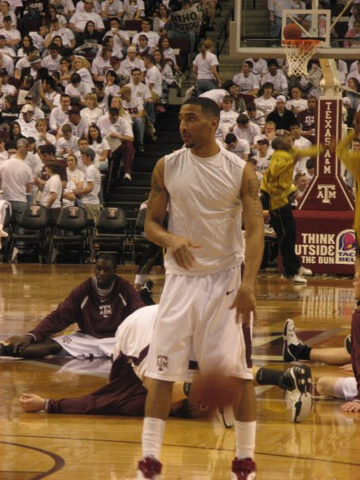

ACIE LAW IV / TEXAS A&M BASKETBALL
Before
belief.
Before the shot. Before the Sweet 16.
There was a player who stayed.

PERIOD WARMUP PHOTOGRAPH · CROPPED & TONED
THE PLACE YOU START
A story that ends
in the Sweet 16
begins with zero.
Sixteen conference games. Sixteen losses. In Acie Law’s freshman season, Texas A&M did not win a single Big 12 game.
It would be easy to begin with the jumper at Kansas. But a shot is only a moment. This is the story of the years that made it matter.
TURN THE YEARS →01 / FOUR SEASONS OF CHANGE
Belief is
built.
Scroll through the years.
Or choose a season to examine it.
The bottom.
FROM THE ARCHIVE / 2013
The name
came later.
A&M’s retrospective interview called him “Mr. Clutch.” The reputation was built one possession at a time.
OPEN THE ORIGINAL Q&A ↗
Published June 7, 2013. Preserved as an archival artifact; not a Kansas game photograph.
02 / LAWRENCE, KANSAS · FEBRUARY 03, 2007
A place they
had never won.
Allen Fieldhouse. No. 6 Kansas. With 6:33 left, the Aggies trailed by ten.
Then the game began to turn.
ILLUSTRATIVE COURT / NO INFERRED SHOT LOCATIONS
MOMENT 01 / FIVE CHECKPOINTS
The deficit.
Selected checkpoints from A&M’s contemporary recap, not a complete play-by-play. The report places Law’s three at approximately 20–21 seconds.
Law: 23 points.
A&M’s first victory in the series.
03 / LEXINGTON, KENTUCKY · MARCH 17, 2007
Twenty-seven years.
One more minute.
To reach the Sweet 16 for the first time since 1980, A&M had to get past Louisville—and Edgar Sosa’s 31 points.
RUPP ARENA
LEXINGTON, KY
TEXAS A&M
vs.
LOUISVILLE
THE CLOSING SEQUENCE
An opening.
Sequence reconstructed from the contemporary game report. Intermediate events are not assigned invented timestamps.
POINTS AGAINST LOUISVILLE
THE AGGIES WERE GOING TO THE SWEET 16.
04 / WHAT A SCORE CANNOT HOLD
The ending wasn’t
a championship.
Five days later, Memphis won 65–64. Law scored 13 in his final game as an Aggie. A remarkable season ended one point short.
But the distance between where he started and where he finished was larger than that final margin. A&M had gone from no conference wins to three consecutive 20-win seasons. A different standard had taken hold.
after the change.
He stayed for it.
THE RECORD / SOURCES & CREDITS
Memory, with receipts.
The historical record
A&M year-by-year records ↗Kansas game report / February 3, 2007 ↗Louisville game report / March 17, 2007 ↗Memphis game report / March 22, 2007 ↗Acie Law Day / February 12, 2008 announcement ↗NBA Draft / June 28, 2007 ↗The visual archive
Warmup photograph: Ruckmann, via Wikimedia Commons, CC BY 3.0. Cropped and color-toned for this story. Original & license ↗
2013 interview graphic: Texas A&M Athletics / Texas A&M Lettermen’s Association. Original publisher’s embedded lettering retained. Original publication ↗
Private editorial concept, unaffiliated with Texas A&M or ESPN. Interview graphic remains its owner’s property; permission has not been established for wider distribution. No simulated quotes, unverified video or inferred shot coordinates are used.